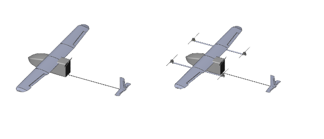
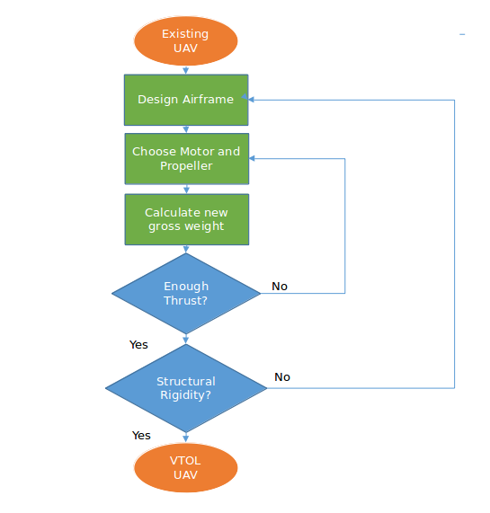
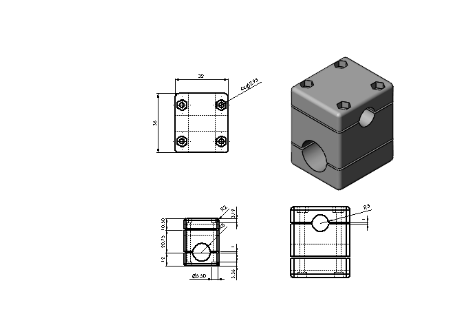
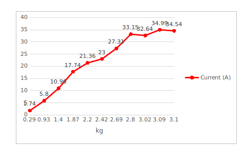
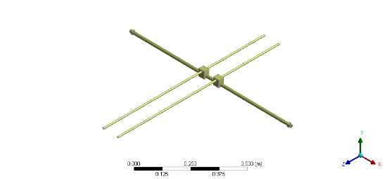
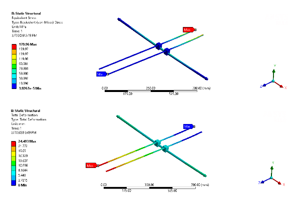

VTOL¶
The current design poses difficulty during take-off and landing. One way to overcome this difficulty is to incorporate a system for vertical take-off and landing (VTOL). The simplest modification that can give the VTOL capability is the addition of quadcopter system. 
The components that comprise of the quadcopter system are:
Frame
4 Brushless DC Motor with corresponding propellers, ESCs and wires
Battery
It is vital that weight added due to the modification is minimum as far as possible while giving the required strength. So, the process involved designing a basic lightweight frame, selecting motor and propeller considering the new weight and enhancing the structural strength in the subsequent iterations.

Design of airframe¶
Following are the most important criteria to consider during design of airframe.
The rear propeller do not interfere with the pusher prop
The forward as well as rear propeller do not interfere with the fuselage and/or the wings.
Distance of the propeller from the UAV CG be as minimum as possible to reduce bending stress at wing-fuselage joint. The following drawing pertains to the wing-airframe connection for the modification. 
Selection of motor and propeller¶
The motor- propeller combination that would give the thrust to lift-off the gross weight of the UAV was considered. One that was suitable was found to be Foxtech Motor S4016 KV380 V2. The propeller used was 15’’ propeller.
| Motor | Propeller | Battery |
|---|---|---|
| Foxtech S4016 KV380 V2. | 15” | 4 Cell lipo |
The following is a result of lab test of the motor-propeller combination.  When each motor draw about 21.36 A current, the thrust to weight ratio is 1.8. Considering the quadcopter configuration will only help in take-off and gain of initial cruise speed and because there is room for more thrust gain by increasing current input, this motor- propeller combination is chosen.
Selection of battery¶
4cell to -6 cell LiPo battery was found to be suitable for the operation. Weight Estimate
| S.N. | Component | Unit | Weight |
|---|---|---|---|
| 1. | 16OD x 14MM ID x 1000MM carbon tube | 2 | |
| 2. | Foxtech S4016 KV380 | 4 | |
| 3. | ESC | 4 | |
| 4. | Wires | 4 set | |
| 5. | Motor Mountings | 4 |
Weight of the UAV with VTOL incorporated: 4800 gram
Structural Analysis
Geometric model:

Geometric model for analysis (only one half shown)
Material:¶
The quadcopter airframe consist of two 16OD x 14MM ID x 1000MM carbon tube. The two wing spars are also carbon tube. The wing spar-frame spar connectors are 3D printed parts from Acrylonitrile butadiene styrene (ABS). However, the material for the mount was also taken as carbon fiber for ease of analysis as exact figures for property of ABS were unavailable.
| Material | Property | Value |
|---|---|---|
| Carbon Fiber | Density | 1600 Kg/m^3 |
| Tensile Strength | 2550 MPa | |
| Young’s Modulus | 135 GPa | |
Post Processing: Stress and deformation under the action of gravity and thrust force were observed. For this the wing spar were constrained as fixed support. Thrust force of 30 N (considering thrust to weight ratio of 2.5 to be upper limit for the operation) was applied for analysis.  It is observed that the addition of the quadcopter system doesn’t add considerably to the stress at the wing-fuselage joint. Also, the wing-tip deflection is not so high at normal thrust condition (15.6 mm at 20N thrust per motor). This provided a favorable condition for the quadcopter system installation.